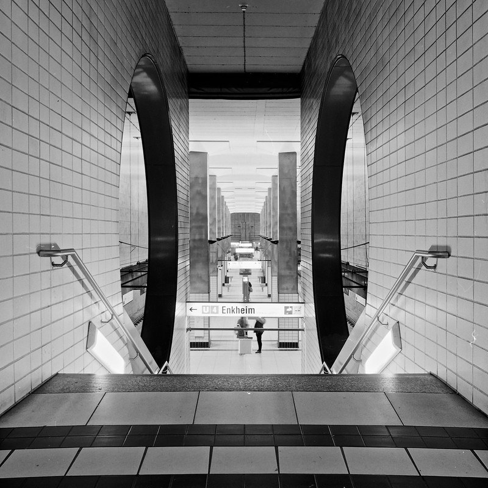

乐凯影者100 上市：32 元一卷的国产黑白，和 Kentmere、Fomapan 怎么选
乐凯出了一卷新的黑白胶卷：「影者100」，135 画幅、36 张、ISO 100，电商实价约 32 元一卷——比同档的 Kentmere 100 便宜一档，和本站目前最便宜的那一档（Fomapan 100）基本持平。但先说清楚能核实与不能核实的部分：官方只确认了「影者100」这个名字和 7 月上海展上的展出；规格表、120 画幅、传闻里的 400 卷，目前都没有官方说法。
一、先把事实钉住：官方确认了什么，没确认什么
这次的一手来源只有两条，而且是同一件事的两处发布：乐凯官网 8 月 4 日的展会新闻（乐凯官网新闻），以及母公司中国航天科技集团官网的同一则消息（航天科技集团）。两条都只写了「全新黑白胶卷『影者100』」——没有规格、没有价格、没有上市日期。
| 项目 | 现在的状态 |
|---|---|
| 卷名「影者100」 | ✅ 官方确认（乐凯官网 + 航天科技集团） |
| 2026-07 上海 P&I 展展出 | ✅ 官方确认（与 C400 同台） |
| 135 / 36 张 / ISO 100 / D-76 通用药水 | ⚠️ 媒体与电商一致，官方未发规格表 |
| 约 32 元一卷 | ⚠️ 电商实价，不是官方定价 |
| 120 画幅 | ❌ 查不到 |
| 「影者400」 | ❌ 只有英文报道，中文侧查不到 |
| 官方样片 / 技术数据表 | ❌ 官网产品目录里还没有它 |
为什么要把这些分开写？因为在胶片圈，传闻、AI 生成的样片、电商标题里写错的参数，传播速度永远比官方公告快。这卷刚好三项都占：
一个具体提醒：目前网上流传的「影者100 样片」，有外媒质疑其中一张是 AI 生成的（法国摄影媒体 Pellica 的说法）。这只是单一来源的质疑，不能当结论——但它给出一条很实用的规矩：在官方样片和技术数据表出来之前，别拿任何一张网图当这卷的成像参考。

二、32 元这个价，落在哪一档
把本站收录的 100 度黑白卷按 135 参考价排一排，影者100 的位置就很清楚了：
| 卷 | 品牌 | 135 参考价 | 备注 |
|---|---|---|---|
| Fomapan 100 Classic | Foma（捷克） | 约 ¥28–38 | 本站最低价档 |
| 乐凯 影者100 | 乐凯（中国） | 约 ¥32（电商实价） | 新乳剂 · 仅 135 |
| Kentmere 100 | Ilford（英国） | 约 ¥45–60 | 同档最常见 |
| Rollei RPX 100 | Rollei（德国） | 约 ¥45–60 | — |
| Adox CHM 100 | Adox（德国） | 约 ¥50–70 | — |
| ORWO UN54+ | ORWO（德国） | 约 ¥50–70 | — |
| T-Max 100 (TMX) | 柯达（美国） | 约 ¥90–110 | 细腻度标杆 |
结论直说：它的对手不是 T-Max，是 Fomapan 和 Kentmere。同样 100 度、同样走通用黑白药水，和 Kentmere 的价差就在 13–28 元之间——而这恰好是「买不买国货」这个决定真正会被算的那笔账。
再算一层到手成本：本站《拍一张胶片多少钱》里算过，黑白送冲约 ¥20–30 一卷。按 32 元卷价 + 25 元冲扫，一卷 57 元、单张约 1.6 元，和 Fomapan 那一档基本并排。前提是电商价能稳住——它一涨价，这个位置立刻变。

三、容易记错的一点：乐凯黑白不是第一次做
不少转述把影者100 说成「乐凯第一支黑白卷」，这不准确。乐凯在 2024 年就复产过黑白卷：SHD100 和 SHD400，当年 SHD400 单卷约 25 元，圈里实拍讨论过一轮（2024 年的实拍体验）。
所以这次的区别不在「有没有黑白」，而在「新乳剂」：电商标题写的是「新乳剂配方」，英文报道也明确把它和 2024 年那批 SHD 分开描述。换句话说，影者100 是一次新配方，不是把老卷换个盒子重新卖。这句话对老用户的意义比对新人大——SHD 系列当年被吐槽最多的是品控与反差。
放进乐凯这两年的时间线里看更清楚：2025 年 7 月彩色 C200 复产（展会现场 52 元一卷）、2026 年 C400 上市（约 65–69 元、含冲扫、有 120），现在轮到黑白出新配方。两年时间，国产卷从「回来了」走到了「开始出新型号」。

四、想买的话，先想清三件事
还有一条不算选购建议，但值得记住：「影者400」在中文侧完全查不到。英文媒体（Kosmo Foto）报道乐凯同时发布了 100 和 400 两卷，但乐凯官网和电商页面都没有 400 的踪迹。按本站的规矩，这条只能写成「有此一说」——你要找 400，先当作它不存在。
五、一句话
国产卷的意义不只是便宜十几块，是你不用再等海运，也不用担心哪天下架。
下面这几卷是本站收录的 100 度黑白，规格、使用感受、参考价和实拍样片都在——拿它们和影者100 对着看，比看任何评测都直接。
最后交代数据口径：影者100 的规格与价格来自公开报道和电商页面（2026 年 9 月查证），不是官方数据——官方目前只确认了卷名与展会展出。本站所有卷价均为参考价，随市场波动，仅供比较；同档对比价取自各卷档案页的 135 参考价。
本站收录的 100 度黑白卷（多数有 120 规格）
Fomapan 100 Classic（约 ¥28–38） Kentmere 100（约 ¥45–60） Rollei RPX 100（约 ¥45–60） Adox CHM 100（约 ¥50–70） T-Max 100（约 ¥90–110） Neopan 100 Acros II（约 ¥95–120）
去胶卷库看看这几卷
「胶卷档案」是一个可搜索的胶卷资料库：每卷都有规格、特性、使用感受、参考价与实拍样片。搜品牌或型号就能直达。